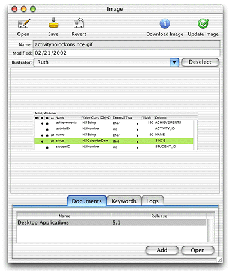

Problem: You need to add actions to a controller yet still preserve the dynamic character of the controller.
Solution: Subclass the controller class and use the rule system to use it throughout the application.
This technique is used in "Extend a Controller Class" in the chapter "Advanced Tutorial".
Subclassing a controller class and writing a rule to use it is the best way to add custom actions to your application's controllers. As well as taking real advantage of object-oriented programming, it preserves the dynamism of Direct to Java Client applications. The other mechanisms to add actions require freezing XML, and anytime you freeze XML, you lose a lot of the dynamism of the rule system.
The dynamically generated user interfaces in Java Client rely on a core set of controller classes: EOFormController, EOQueryController, and EOListController. In an application that, for example, stores images in records, you need custom actions to both select images from the file system and download them to the file system. This requires two additional action buttons in a form window, Download Image and Update Image.
To add these actions, create a new class called FormController, as shown in Listing 10-1.
Listing 10-1 Subclassing EOFormController
package assetmanager.client;
import javax.swing.*;
import com.webobjects.foundation.*;
import com.webobjects.eocontrol.*;
import com.webobjects.eoapplication.*;
import com.webobjects.eogeneration.client.*;
import com.webobjects.eodistribution.client.*;
public class FormController extends EOFormController {
public FormController(EOXMLUnarchiver unarchiver) {
super(unarchiver);
}
public NSArray defaultActions() {
Icon icon =
EOUserInterfaceParameters.localizedIcon("ActionIconInspect");
NSMutableArray actions = new NSMutableArray();
actions.addObject(EOAction.actionForControllerHierarchy("saveImageToDisk",
"Download Image", "Download Image", icon, null, null, 300, 50, false));
icon = EOUserInterfaceParameters.localizedIcon("ActionIconOk");
actions.addObject(EOAction.actionForControllerHierarchy("updateImageInRecord",
"Update Image", "Update Image", icon, null, null, 300, 50, false));
return EOAction.mergedActions(actions, super.defaultActions());
}
public boolean canPerformActionNamed(String actionName) {
return actionName.equals("saveImageToDisk") || super.canPerformActionNamed(actionName));
}
public void saveImageToDisk() {
//some code
}
public void updateImageInRecord() {
//some code
}
}
Subclasses of the core controller classes must contain these
methods: a method overriding defaultActions,
a method overriding canPerformActionNamed,
and a method for each action defined in defaultActions.
By overriding defaultActions,
you are adding to the controller's actions, and by overriding canPerformActionNamed,
you are authorizing the additional actions.
To use this class in all form windows throughout the application, you need only write a simple rule:
((task='form') and (controllerType='entityController'))className"assetmanager.client.FormController"50So, without needing to freeze XML, these customizations change the default form window to include new actions, as shown in Figure 10-1.
Figure 10-1 Image form window with new actions
The standard actions delete and insert are disabled by another rule:
*true*disabledActionNames(insertWithTask, delete)50This rule is described in "Task: Restricting Access to an Application".